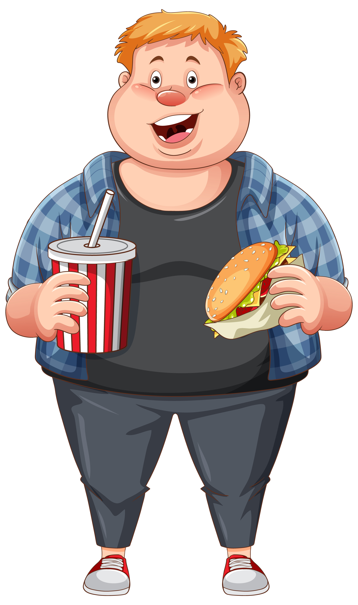

For Obese
- Taking your health history. Your doctor may review your weight history, weight-loss efforts, physical activity and exercise habits, eating patterns and appetite control, what other conditions you've had, medications, stress levels, and other issues about your health. Your doctor may also review your family's health history to see if you may be predisposed to certain conditions.
- A general physical exam. This includes measuring your height; checking vital signs, such as heart rate, blood pressure and temperature; listening to your heart and lungs; and examining your abdomen.
- Measuring your waist circumference. Fat stored around the waist, sometimes called visceral fat or abdominal fat, may further increase the risk of heart disease and diabetes. Women with a waist measurement (circumference) of more than 35 inches (89 centimeters) and men with a waist measurement of more than 40 inches (102 centimeters) may have more health risks than do people with smaller waist measurements. Like the BMI measurement, waist circumference should be checked at least once a year.
- Checking for other health problems. If you have known health problems, your doctor will evaluate them. Your doctor will also check for other possible health problems, such as high blood pressure, high cholesterol, underactive thyroid, liver problems and diabetes.
